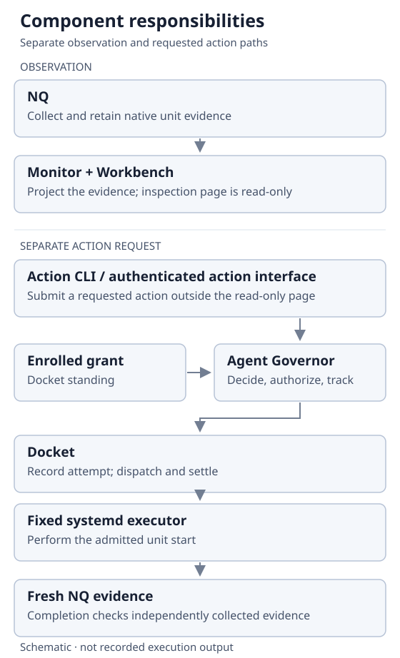
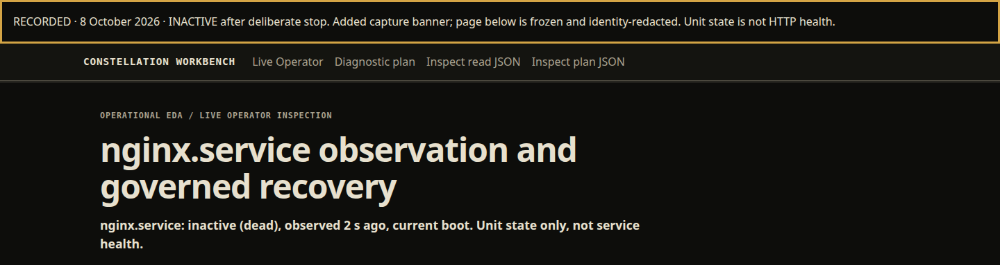
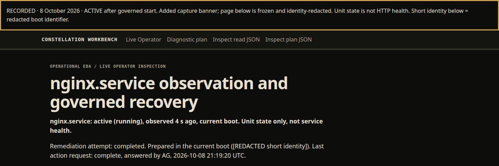
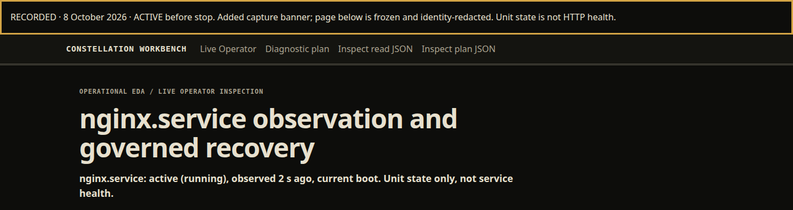
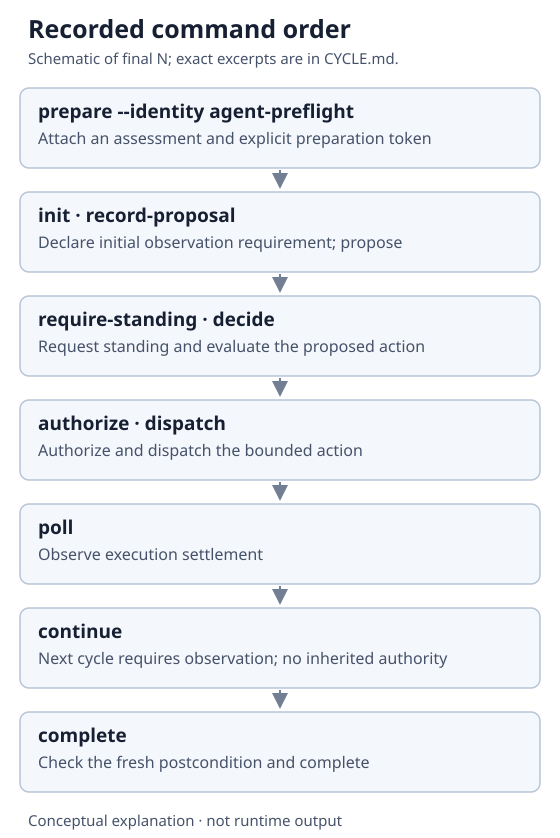
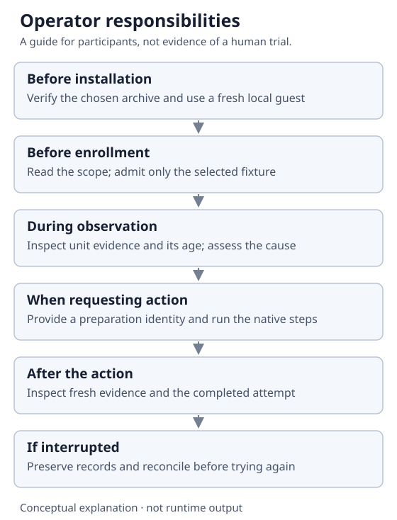

Recorded local exercise · 8 October 2026
A stopped unit.
One authorized start.
A fresh result.
This run follows a deliberately stopped nginx unit through a bounded action and a new observation. The commands and screenshots come from an automated qualification of the prepared candidate.
Observation and action have separate paths
The Workbench shows what the selected components reported. Viewing a report grants no permission to change the system. The action path checks the decision and authorization, records the attempt, and requires new evidence before completion.

1. Observe the deliberately stopped unit
The fixture was stopped deliberately. Its recorded summary then said:
status line: nginx.service: inactive (dead), observed 2 s ago, current boot. Unit state only, not service health.
This is a statement about systemd's unit state at capture time. It neither diagnoses why a real service failed nor proves that an active unit serves requests.

2. Prepare and check the proposed action
These exact subcommands were run from the extracted candidate's directory. They are excerpts from an existing run, not standalone installation instructions. Supervised participation is arranged separately with the maintainer; these excerpts do not provide an installation packet.
sudo python3 scripts/native-action.py prepare --identity agent-preflight --prestate inactive --assessment 'Current native evidence shows the enrolled unit inactive; cause is not established.' sudo python3 scripts/native-action.py init sudo python3 scripts/native-action.py record-proposal sudo python3 scripts/native-action.py require-standing sudo python3 scripts/native-action.py decide
The record reaches admissible_pending_authorization: the proposal passed its decision checks, but still needs authorization. Here standing refers to the required conditions for the action to be allowed. It is not supplied by reading the page.
The agent-preflight argument names the automation driving the exercise. Omitting it was rejected by argument validation with exit 2. That label alone does not authenticate a person or grant authority. Enrollment had already provided the bounded grant; this transcript does not depict a separate human approval dialogue.
3. Authorize, dispatch and inspect the outcome
sudo python3 scripts/native-action.py authorize sudo python3 scripts/native-action.py dispatch sudo python3 scripts/native-action.py poll
The recorded states advance through authorization_consumed, dispatched, and settled_observation_required. Execution has a recorded outcome; the task still needs a new observation.
4. Obtain fresh evidence before completion
sudo python3 scripts/native-action.py continue sudo python3 scripts/native-action.py complete
continue opens the next observation-required cycle without inherited authority; it does not request a new collection. The collector runs independently. This is why observation_required appears both at initialization and here: initial evidence supports the proposal, and fresh post-action evidence supports completion. The final record has the completed state branch and the Workbench reports the unit active.

Before the deliberate stop

All ten commands above recorded exit 0. State names here identify the active branch of the returned state object; they are explanations, not reconstructed terminal output. Exact selected command and output fragments retain that distinction.
Command and evidence flow

A meaningful refusal: an existing attempt cannot become a new one
Separate earlier session. A prior candidate was asked to prepare another attempt after its first one. It returned this complete, recorded refusal:
{"owner":"Operational ECAD","reason":"ATTEMPT_ALREADY_EXISTS","schema":"operational_ecad.refusal/v1"}
The existing attempt remained the object to inspect. Later commands were also refused; their generic error does not establish each underlying cause. This earlier session used a different helper version and is not a second action in the final-candidate run above. Commands, recorded refusals and limits.
Operational ECAD remains in historical schema and CLI identifiers. Operational EDA is the newer descriptive wording. Neither term is an additional capability or permission.
What the operator remains responsible for
Select the private trial environment, verify the exact candidate, enroll the selected unit and grant, inspect the record, and decide when to stop. An interrupted command does not establish whether its action happened. Follow the recovery instructions before attempting more work.
